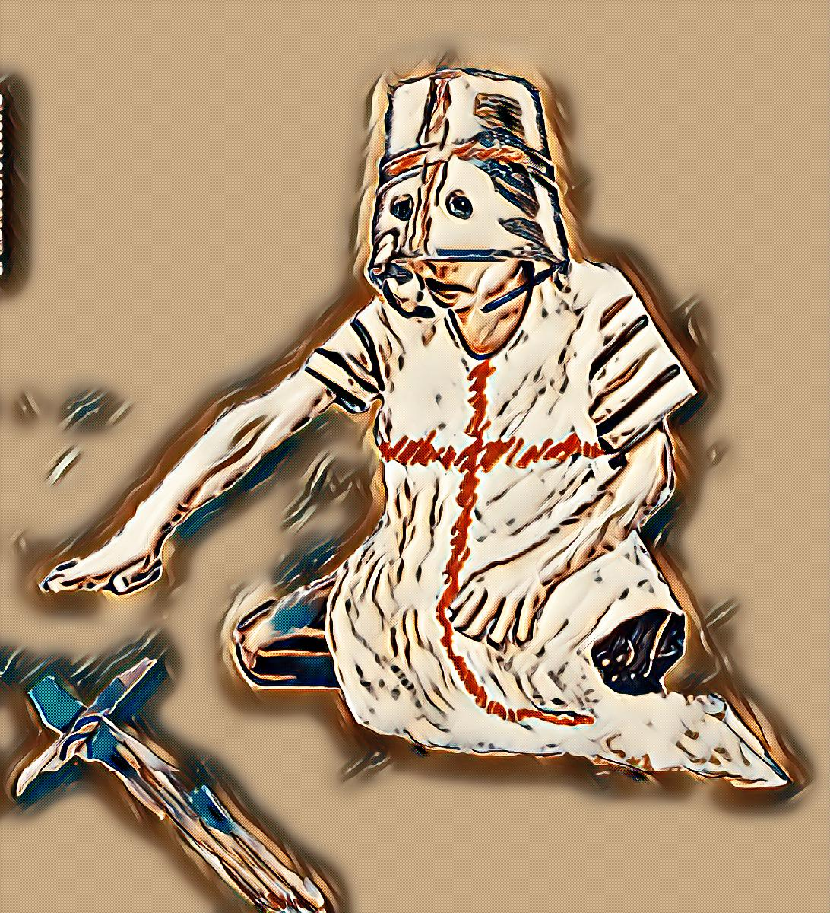

AUTHORS WORK
Welcome to the litarary works of Alastair Wakefield
SWORDS AND BROOMSTICK (NEW!)
Based on a True Story, May 7, 2022
Swords and Broomsticks is a collection of short stories about an abused boy, told from the eyes of a six-year-old boy.
SOJOURN
Sherlock Homes Retires, June 15, 2010
The wealthy and vastly powerful Lord Justice Harold Stratford has a life most would envy. With his partner, barrister John Willow, he protects and controls the south of England. There is nothing to give him the slightest inkling that something is about to go terribly wrong. When Sherlock Holmes is found brutally murdered alongside three other men in an abandoned house, Lord Stratford's world is shattered. While he is determined to seek full retribution from the highest justice, the only surviving witness to the murders is killed in his hospital bed. Worst of all, the motiveless crimes lack any evidence whatsoever. As more murders follow-each more ghastly than the last-Stratford struggles to retain his grip on the reins of power, but more importantly, his own good sense. With Holmes in his grave and Watson a broken man, it seems as if there is nothing to stop the hand behind it all. Even when it seems it cannot get worse, another more devastating murder looms that may cost one man his life and the other his sanity.
- Category: Mystery/Suspense
- Publisher: iUniverse
- ISBN-10: 1440195218
- Pages: 415
- ISBN-13: 9781440195211
Alasdair Wakefield
Computer Programmer by trade, Author by Inspiration.
I began writing at the age of 12, when a traumatic event left me unable to speak for several years. I retreated into my own world and turned that world into stories.
Popular Short Shories
-

Swords and Broomsticks
src="stories/SwordsAndBroomsticks/chapter1_BraveKnight.htmlChapter 1 - A Brave Knight -
Swords and Broomsticks
Chapter 2 - The Cave of Dyre -
 Swords and Broomsticks
Swords and Broomsticks
Chapter 3 - Pirate's Treasure

Tags
Swords Wakefield London Broomsticks Abuse DIY Hazen Alastair Family Wakefield Alasdair Shopping